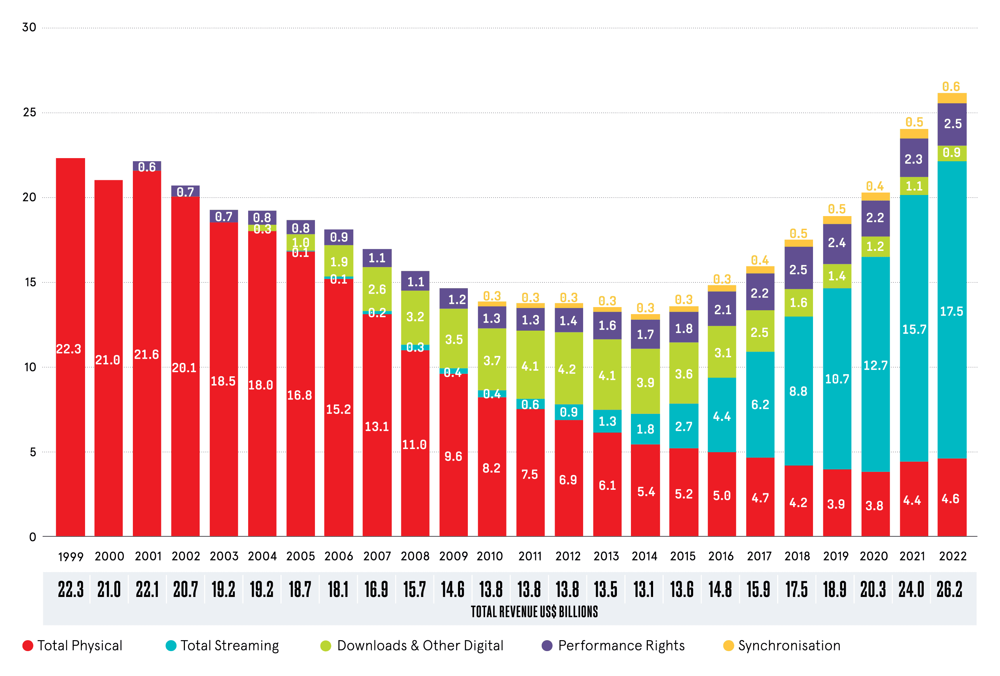
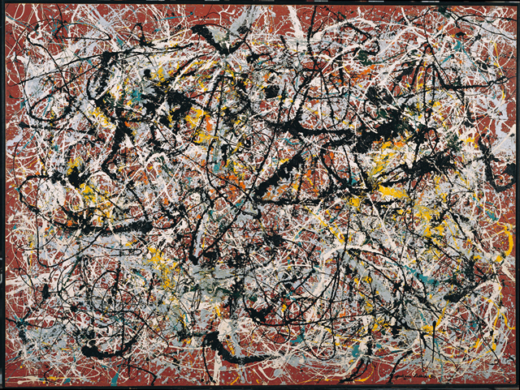
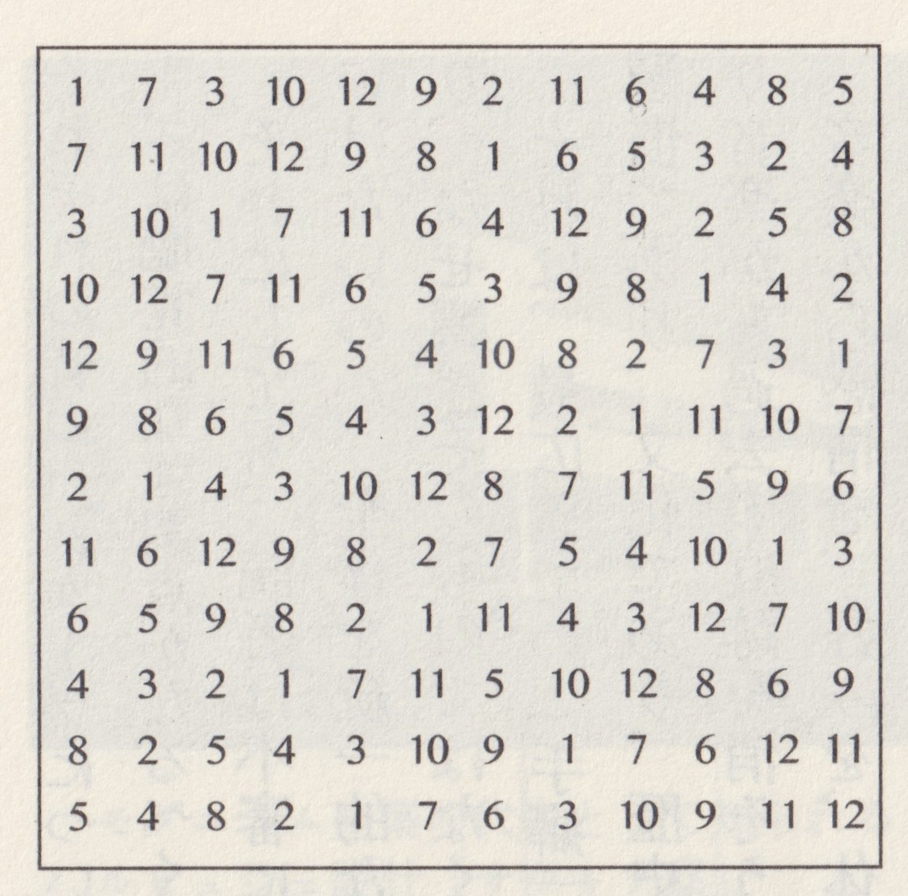
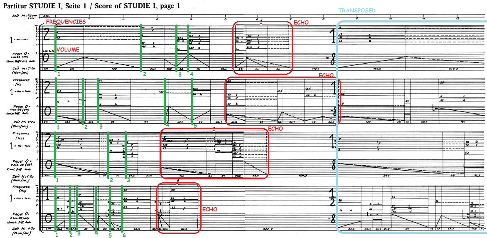
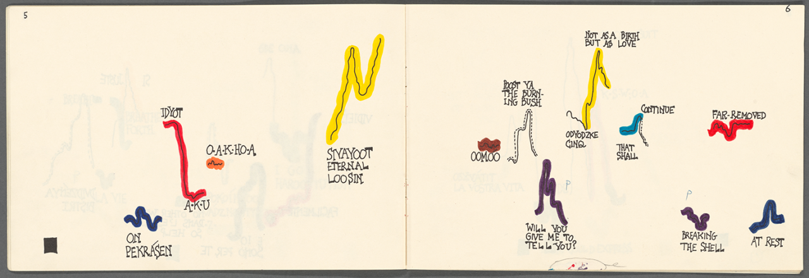
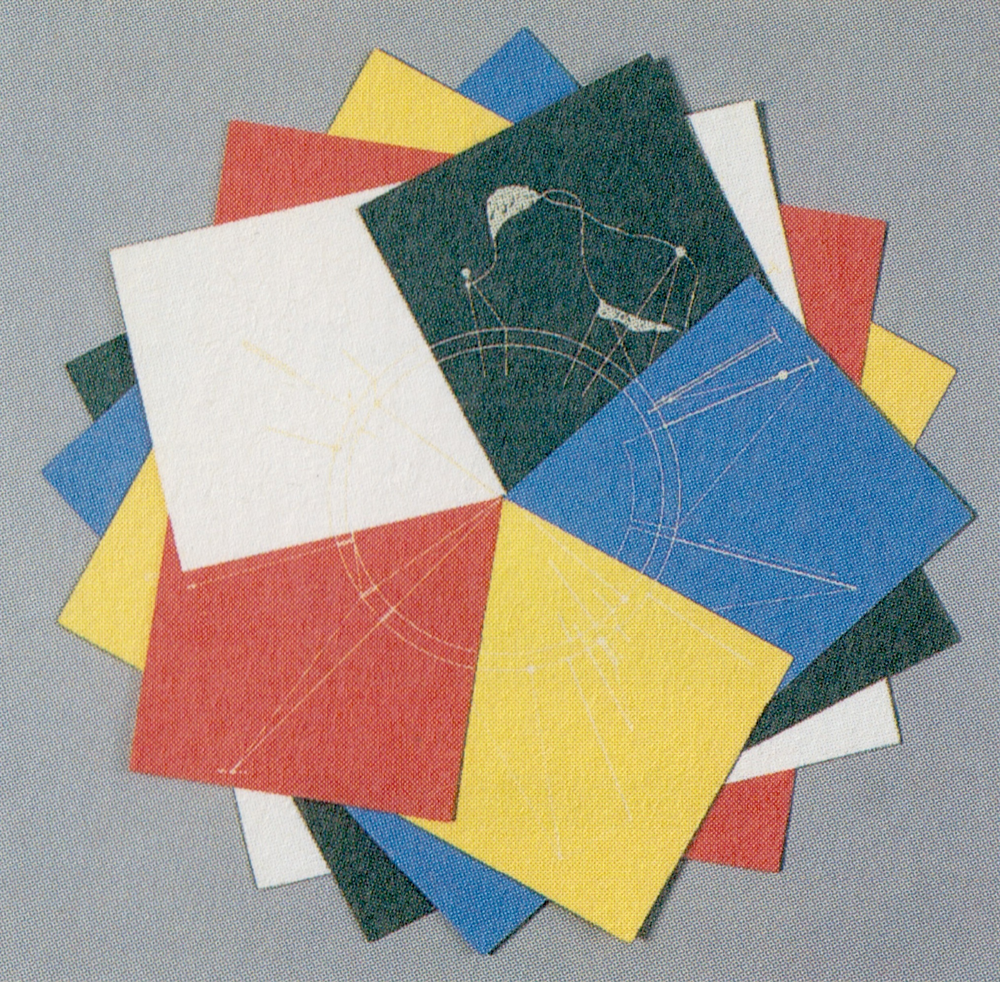

それゆえ私の目的は、〈目的〉を取り去ることである
（John Cage, “Schwartz and Childs” 1967）
〈効果的〉な音楽
Spotifyなどの音楽ストリーミングサービスなどで音楽を聴いていると、一つ（実際には一つとは限りませんが）困った問題に差し掛かります。それは充実した「解説」、つまりライナー・ノーツがないことです。現代音楽のように複雑な音楽であればこそ、その背景には興味が惹かれるものであるし、かたや好きなアーティストや、好きな楽曲についてより詳しく知ろうとするならば、コンパクトで充実したライナー・ノーツがあることで、音楽体験がより豊かになることも容易に想定されるでしょう。この音楽に「解説」がないという事態は、一つの音楽的な表象を露にしているようにも思われます。それは音楽市場において支配的な地位を占めている音楽様式が、〈目的論的〉な音楽——つまり聴くという行為、あるいはその聴覚的情報を体験することを第一義に作られた音楽であることを前提としているということです。その音楽が作られた背景や、思想などの「音響のアウトサイド」は、今日音楽の中心的なマーケットからは、いくらか距離をおいています。

こうした市場のありようを見ていると、そもそも音楽というものが、〈効果〉をもたらすための「プロセス」であるかのように思われてきます。実際に私たちは音楽を聴き、一喜一憂し、その〈効用〉を日々確かめています。ただ、音楽の歴史を鑑みれば、音楽が必ずしも〈目的論的〉に作られることだけが伝統的とは限らないことが分かります。今日流布された、音楽に対して〈効果〉を求めようとする態度から帰納され得る、「音楽は人々に〈効用〉するためにつくられるものである」という発想、その本質主義は、却って音楽の多様性そのものを堕落させる危険性さえはらんでいるのです。そのことを理解するためには、ひとたび音楽、とりわけ西洋音楽のたどってきた道のりについて概観される必要があるでしょう。
中世音楽と秩序
今日の、例えばポピュラー・ミュージックのルーツはアメリカに見ることができますが、アメリカ音楽の音楽的ルーツは西洋とアフリカに見ることができます。その中でハーモニーに関して大きな影響力を担っているのが西洋なわけですが、その西洋音楽はどのような歴史のもとに成り立っているのでしょうか。西洋の起点をどこに置くかというのは難しい問題ですが、ローマ帝国滅亡後のカール大帝（Charlemagne、在位: 768-814）のフランク王国成立後であるとすれば、その音楽的萌芽（記譜された音楽としての西洋音楽のはじまり）は、「グレゴリオ聖歌」にあったと言えるでしょう。「グレゴリオ聖歌」とは、ラテン語の祈りの言葉による歌詞と伴奏なしのモノフォニー（単旋律）からなる音楽であり、中世の教会や修道院での典礼（礼拝式）で歌われていたものです（ここで言う典礼とは、ローマ・カトリック教会の典礼のことで、カール大帝以前の時代には他にアンプロシウス典礼、ガリア典礼、モサラベ典礼が知られていました）。９世紀に入ると、こうした聖歌にも変容が見られるようになり、その代表的なものに聖歌に歌詞や旋律を加える「トロープス」と、二手に分かれ、一つの聖歌を異なった高さで同時に歌う「オルガヌム」があります。この「オルガヌム」が１２世紀に入ると、聖歌の主声部に一つ、あるいは数個ずつのオルガヌム声部（加えられた声部）が加えられ両声部が歩調を揃えて進むオルガヌム、「ディスカントゥス」、あるいは主声部に対しオルガヌム声部をたくさん配置した「自由オルガヌム/メリスマ的オルガヌム」に拡張します。上声部に音が多い際、主声部の聖歌旋律の一音一音が長く引き延ばされるようになり、こうした旋律をラテン語の「テレーネ」（保ち続ける）に由来する「テノール」と呼び、テノールに置かれた旋律を「低旋律」と呼びます。ここにきて聖歌の低旋律は、もはや聖歌として聞き取ることが難しくなっていきますが、オルガヌムを形成するにあたり、この聖歌の存在は欠かせません。つまりオルガヌムにおいて、聞き取れなくとも、そこに聖歌、すなわち神の秩序があるという事実が重要な役割を果たしていたと推察することができます。
また中世の音楽観を考えるにあたって非常に興味深い書物と言えるものに、ボエティウス（Anicius Manlius Torquatus Severinus Boethius、480?-520?）が記した、『音楽綱要』があります。これは中世を通じて広く読まれた理論書の一つで、彼はこの本の中で音楽を「ムジカ・ムンダーナ（宇宙の音楽）」、「ムジカ・フマーナ（人間の音楽）」、「ムジカ・インサトゥルメンタリス（楽器の音楽）」の三種類に分類します。ムジカ・ムンダーナとは四季の変化や運行などを司る秩序ことを指し、ムジカ・フマーナは人間の心身を司る秩序のことを指します。今日の私たちが「音楽」と呼びうるものは、歌や楽器から奏でられる「音響」であることが多いですが、当時の中世の人々にとって「本来の」音楽とは「世界を調律する秩序」そのものでした。そして三つ目のムジカ・インストゥルメンタリスこそが「実際に鳴る音楽」であり、今日の音楽のイメージに最も近いものです。このムジカ・インサトゥルメンタリスはこの三つの区分の中でも最下位に置かれており、このことは、この時代において人々が実際に鳴る音楽よりも、その背後にある秩序としての「本当の」音楽というものを、重要視していたことを示唆するものでもあります。

以上のことからオルガヌム、ならびに『音楽綱要』、そのいずれからも、当時の人々が音楽の背後にある秩序に対して強い意味を見出していたことが伺えます。こうした秩序の音響的、感覚的な表れが音楽だとするならば（〈結果論的〉と呼ぶのはいささか乱暴だとしても）、少なくともこれらの音楽は〈効果〉を目的とした〈目的論的〉な音楽ではないことがわかります。そして中世からルネサンスに突入すると、次第に音楽は「祈りの言葉」から「人の耳に美しく響くもの」へと変遷していきます。この時代において、ヨハネス・オケヘム（Johannes Ockeghem 1410?-1497）の《ミサ・プロラツィオヌム》（Missa Prolationum、種々の比率のミサ曲）や、ギヨーム・デュファイ（Guillaume du Fay 1397-1474）による《バラの花は新しく》（Nuper rosarum flores）などのような、厳格なカノンによる極めて複雑な構成が行われた、聴いただけではカノンの構造を認識することが難しいような作品が作られますが、ここには耳に美しく訴える音楽の秘められた構造組織への志向が見受けられらると同時に、ルネサンスという時代の理性に対する強い信頼性が見て取れます。この後音楽はマニエリスム、バロックの時代を経て、一八世紀後半から「芸術としての音楽」を追求する時代に突入します。今日馴染みのある音楽洋式——どういった数理や概念に裏付けられた構造を持つか、などではなく、表出する音響的な演出によって感情を表現することに重きが置かられるような——の基礎となるロマン派の時代もここに含まれます。グレゴリウス聖歌の原型が３世紀ごろには出現していたという説もありますが、少なくとも私たちが今日親しみを持っている〈目的論的〉音楽洋式が中心的となっている時代、そのパラダイムは、音楽の辿ってきた道のりを俯瞰すると、必ずしも「常識的」な音楽通念であるとは言い切れないことがわかります。
モダニズム音楽と秩序
ロマン派の拡充を経て、２０世紀に入り音楽家たは「新しさ＝モダン」に対する希求をより一層強めます。そうした中で勃発した第一次世界大戦の蹂躙と破壊は、非主観的な抽象性を尊重した音楽への志向を強く促しました。こうしたモダニズムを牽引した音楽家の一人にオーストリアの作曲家であるアルノルト・シェーンベルク（Arnold Schönberg 1874-1951）がいます。彼は「表現主義」と呼ばれる、自己の心の奥に渦巻く抑圧された感情を直接表現する姿勢で創作に臨みましたが（ここにはニーチェやフロイト、マルクスなどに見られるような思想的潮流の影響も現れているように思われます。またアメリカの美術批評家クレメント・グリーンバーグ（Clement Greenberg 1909-1994）は同じくアメリカの画家ジャクソン・ポロック（Jackson Pollock 1912-1956）の絵画をシェーンベルクを参照した上で「多声的」として評価しましたが、この両者の動的で平面的な表現には底通するものを感じさせます。）、彼はより抽象的な形式の音楽の実現を目指し、「十二音技法」と呼ばれる作曲技法を発案するに至ります。

この十二音技法とは半音階にある十二音（C, C#, D, D#, E, F, F#/Gb, G, Ab, A, Bb, B）を均等に扱うことを中心とする理論体系で、音高のみを数列的に管理し配列するものでした。これに対して音価や音量を含むすべての音楽的要素を、数列化し管理する試みが台頭します。これは一般に「総音列技法/トータル・セリエリズム」と呼ばれ、ベルギーの作曲家カレル・フーイファールツ（Karel Goeyvaerts 1923-1993）や、フランスの作曲家・指揮者のピエール・ブーレーズ（Pierre Louis Joseph Boulez 1925-2016）の作品などに見られます。

この総音列技法が用いられたブーレーズの《構造第１巻》（Structures, Book 1、1952）では、12種の音高、12種の音価、12種の強弱、12種のアタック（スタッカートやスラーなど）を厳格なルールのもとに組み合わせることによって曲ができており、そのためこれらの楽曲には、最初にルールを決定した後は、自動で楽曲が生成されるという特徴があります。ここには「形態は機能に従う（Form follows function）」というアメリカの建築家ルイス・サリヴァン（Louis Henry (Henri) Sullivan 1856-1924）の言葉にも代表されるような、当時の風土や環境を超えた普遍性や合理性といった「機能美」を追求する当時の潮流との重なりも見て取れます。


ただ、こうした方法論で作成（むしろ生成）される音楽は、どうしても似たり寄ったりな楽想になるため、このムーヴメントは長くは続きません。ただ、ここで展開された演繹的な作曲法に基づいって作られた楽曲は、音楽の〈結果論的〉な表象を顕著に顕わしていると言えるでしょう。
1951年に西ドイツ放送（WDR）ケルン局は同局に電子音楽スタジオを開設しますが、ここではフランス国営放送局（RTF）に端を発したミュージック・コンクレート（外界の音を録音し、加工して作品をつくるもの）とは異なり、電気的に発生させられた音素材を合成し、作品を構成する方法の音楽が追求されます。スタジオの所長には作曲家のヘルベルト・アイメルト（Herbert Eimert 1987-1972）が就任し、物理学者やエンジニアが招集されました。また先述した総音列技法からなるセリー音楽に関わった作曲家のカールハインツ・シュトックハウゼン（Karlheinz Stockhausen 1928-2007）は《習作１》（Studie I、1953）を作曲し、サイン波を数列によって一元的に管理する、いわば、究極のセリー音楽を志しましたが、ここにもやはり音楽の背後にある数理に対する希求が見受けられます。もちろんすべての電子音楽がそうした志向のもとに作られていたわけではありません。たとえば、ルーマニアの作曲家リゲティ・ジョルジュ（Ligeti György Sándor 1923-2006）は《グリッサンディ》（Glissandi、1957）という長いグリッサンドを徹底的に用いた非常に表現的な電子音楽作品なども残しました。

また現代音楽を語る上で欠かせない人物が、アメリカの作曲家ジョン・ケージ（John Milton Cage Jr. 1912-1992）ですが、彼はセリー音楽の探究が行われていたのと同時期に、「偶然性」、「不確定性」と呼ばれる音楽を打ち出していきました。大きく「偶然性/偶然性の音楽」と呼ばれるものには、作曲行為の過程に偶然性を取り込む、「チャンス・オペレーション」と演奏や聴取の過程に偶然性が生じる「不確定性/不確定性の音楽」があり、（あるいは、当時のヨーロッパの潮流を「偶然性」、アメリカの潮流を「不確定性」と区別する見方もあります）この「チャンス・オペレーション」を代表する作品の一つに《易の音楽》（Music of Changes、1951）があります。『易経』とは、知恵、哲学、占いについて初めて書かれた書物（伏義 B.C. 2953-2838）で、３個のコイン（従来は筮竹）を６回投げた結果として行動を示すものです。ケージはこれを応用し、テンポ、ダイナミクス、音や休符の配置、持続時間、重ね合わせ方などを作曲家の意図を排して、配置していきました。こうしたチャンス・オペレーションに見られる作曲態度は「作曲家における不確定性」を顕しているとも言えます。なおこの《易の音楽》は徹頭徹尾、厳格な基準で制作され、作曲には９ヶ月をも要したと言われています。反対に「演奏家における不確定性」が現れている作品の例としては同じくジョン・ケージの《アリア》（Aria、1958）などが挙げられます。この作品において、あらかじめ記譜されているのはテキストを添えたグラフィックのみで、具体的な解釈はその都度、演奏者に委ねられます。こうした伝統的でないグラフィックなどを用いて演奏の進め方などを指示した楽譜を「図形楽譜」と呼びますが、これは演奏における「偶然性」を引き出すツールとしてしばしば使用されます。図形楽譜が用いられた他の作品の例としては日本人の作曲家である武満徹（1930-1996）とグラフィックデザイナー・図像学研究家の杉浦泰平（1932- ）による《ピアニストのためのコロナ》（CORONA for Pianist(s)、1962）などが挙げられるでしょう。


これらに見られる創作態度は、表出される音楽の有り様よりも、やはりその作品が表出されるまでに踏む過程、プロセスに重きが置かれていると考えられます。つまりここで重要視されているのはその「コンセプト（概念）」なのであって、これは６０年代以降アート界で主流となる「コンセプチュアル・アート（概念芸術）」とも非常に近い構造を持っています。実際、ジョン・ケージや武満徹は、アートと日常生活の融合を目指した前衛芸術運動であるフルクサス（Fluxus）にも参加し、「イヴェント」と称されるコンセプチュアルな芸術実践に関わりました（他に日本からは一柳慧、オノ・ヨーコ、小杉武久、ヨシ・ワダなどが参加しました）。
ここまで２０世紀に作られた音楽について、とりわけ〈非目的論的〉につくられた音楽について参照しましたが、これは必ずしも２０世紀に作られた西洋音楽（西洋音楽の文脈の中で作られた音楽）が、いずれもそうした様式のもとに作られていることを示しているわけではありません。先述したハンガリーの作曲家リゲティ・ジョルジュは音を「群」として扱い、《アトモスフェール》（Atmosphères、1961）を作曲しましたが、ここでは音楽に対する新規性の追求こそ見られるものの、音楽的な構造は極めて音響的、すなわち〈目的論的〉です。また中世西洋に話を戻せば、教会の外では、「トルバドゥール」（南フランス）や「トルヴェール」（北フランス）、「ミネジンガー」（ドイツ）などの吟遊詩人たちが恋愛歌を歌っており、中世においても、必ずしも〈非目的論的〉な音楽ばかりが支配的であったわけではありません。ここで留意されたいのは、私は音楽が〈目的論的〉な様式か、そうではないかといったことで、音楽の価値づけを行おうとしているわけでないということです。音楽は多様であれば多様であるほどにその体験は深く、興味深いものになります。その上で今回は世の中であまりフォーカスされることが少ない種類の音楽の多様さについて取り上げ、その試みのもとに、音楽の豊かかさについて再認識することを試みました。
こうしてみると２０世紀以降のこうした作曲家たちの音楽に対する態度は、中世にみられるような音楽の背後の秩序に重きを置いた音楽観とも類似するように思われます。１４世紀ごろから盛んになったルネサンスですが、この「ルネサンス」という言葉は、フランス語で「再生」（re- 再び + naissance 生まれる）を意味しており、これは後世の学者がこの時代に理性の力で世の中を見ようとした古代ギリシアの学芸の精神の復興を見出し、名付けたものです。そうした意味で、２０世紀以降のこうした音楽家たちの姿勢は、ある種ルネサンス的とも言えるかもしれません。
アポロン的、ディオニソス的
ドイツの哲学者フリードニヒ・ニーチェ（Friedrich Wilhelm Nietzsche 1844-1900）は1872年に『悲劇の誕生』（Die Geburt der Tragödie、1872）を著し、その中で芸術を「アポロン的なもの」と「ディオニソス的なもの」に分類しました。アポロンはギリシア神話に登場する太陽神で、ディオニュソスは同じくギリシア神話に登場する酒の神であり、ニーチェはそれぞれアポロンを形式や秩序への衝動の象徴とし、またディオニソスを陶酔的な衝動の象徴としました。ニーチェは音楽をディオニュソス的な芸術と分類する中で、その中でまたアポロン的なものとディオニソス的なものに区別します。そしてここに見られる音楽の２つの区分は、およそここで語った〈目的論的〉な音楽か、そうでないかという議論にも類似するように思われます。私たちが馴染みのある音楽様式、すなわちロマン主義的な音楽態度が〈目的論的〉であることはすでに語りましたが、これがおよそ音楽への陶酔を主とするディオニソス的な態度だとすれば、今日取り上げた音楽にみられるものは、およそ形式や秩序への憧憬を主とするアポロン的な態度だと言えるのではないでしょうか。そして音楽において、モダニズムが飽和し、今日ポスト・モダンと呼ばれる時代にあって、私たちは表現のひとつの手段、あるいはひとつの指向性として、ディオニソス的な表現やアポロン的な表現を、その必要に応じて志向する自由があるように思われます。
最後に、コンセプトが非常に興味深い音楽作品のひとつとしてテリー・ライリー（Terry Riley、1935-）の《イン・シー》（in C、1964）を紹介します。ミニマル・ミュージックの出発点ともされるこの作品は、53のフレーズの断片を演奏者が任意に演奏し、単純な反復やゆるやかな音型変化などによって展開してゆく楽曲で、演奏者には常に空気を読みながら演奏することが求められます。楽想は全音階的で、非常に耳触りが良く、この楽曲のこうした様式を知らずとも楽しめる楽曲です。そうした意味でこの楽曲はアポロン的とも、ディオニソス的とも言えるでしょう。ただし、こうした楽曲にユニークな構造があることは楽曲をただ聴くだけでは十全にわかるとは言い難いです。——その楽曲の放つ楽想はもちろんのこと、その楽曲の背後にある構造に対しても傾注するということ。それは、より一層私たちを音楽体験の深淵、その奥深くへと誘ってくれるのではないでしょうか。